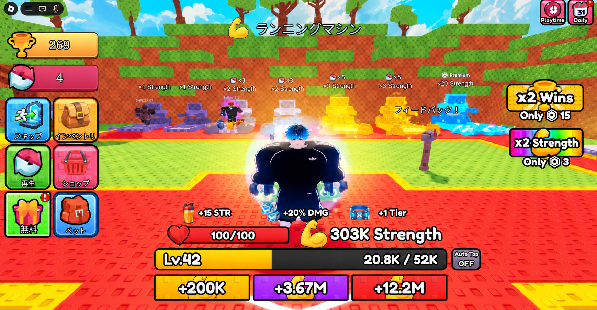
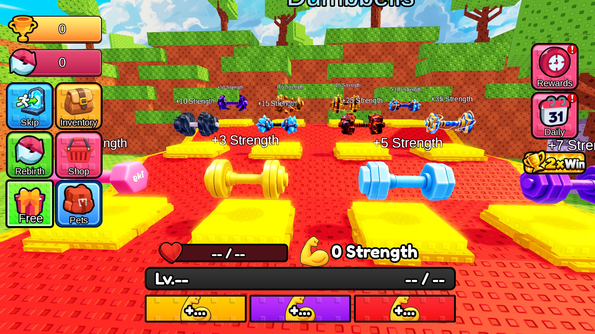
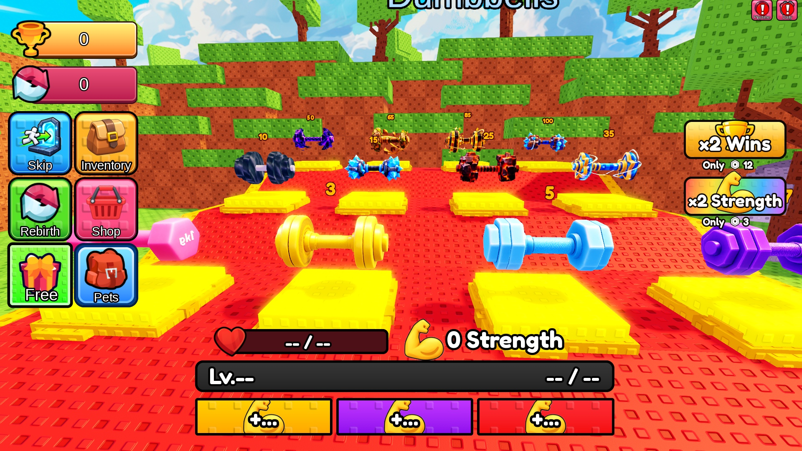
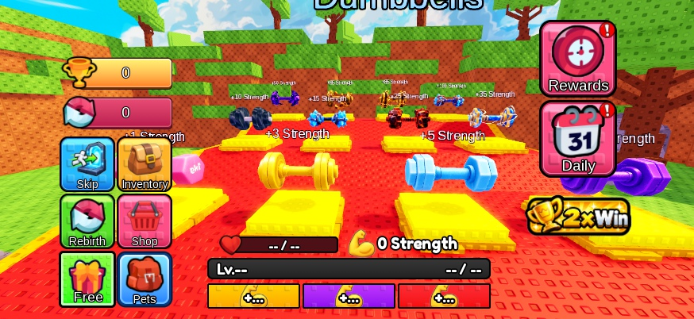
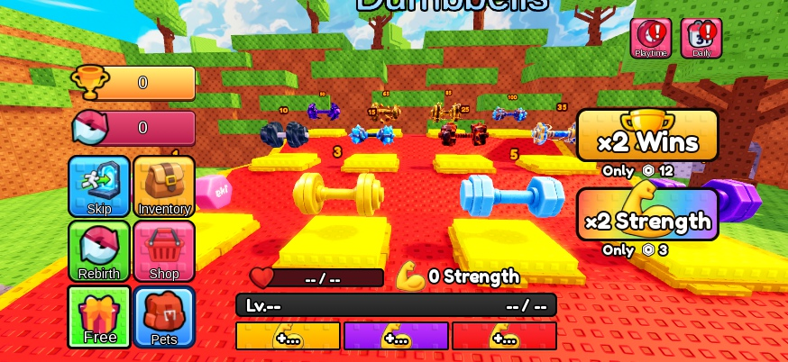
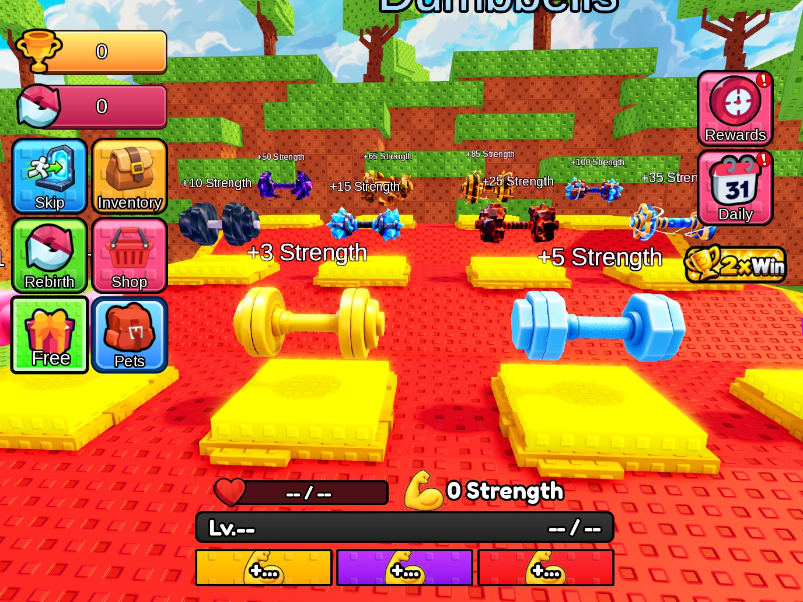
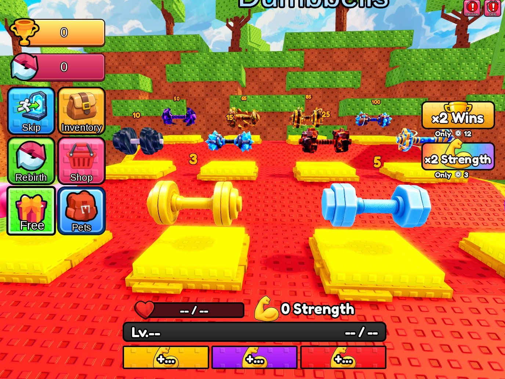
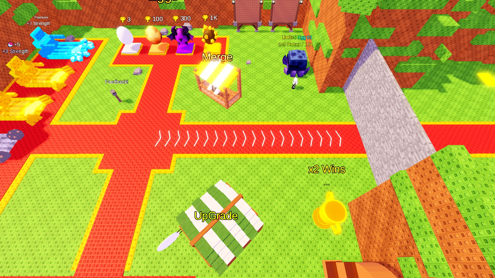

2026-11-17 / PlaceId 126576845524886 / UniverseId 10765181857
Repository: koujiyoshimura54-crypto/Smash_and_Crush。基準commit: 16745e1＋現在の副本Studioの未保存Source。
C:\Users\kouji\Downloads\小さくなった英語購入バナー.png（2026-11-17 12:22:22）。1738×905のゲーム画面モックアップをレイアウト・装飾の参考として使用。最新の縮小済み版を採用し、さらに70%縮小していない。画面背景・固定価格入り画像はボタンへ貼り付けていない。

| 商品 | Pass ID | 今回のAPI取得値 |
|---|---|---|
| ×2 Wins | 1970515086 | 12 Robux |
| ×2 Strength | 2089895831 | 3 Robux |
既存MarketplacePrice.Getをfallback=nilで使用。Winsの取得値12はユーザー確認価格15と異なる。差の理由は未確認で、地域価格などとは断定しない。価格設定自体は変更していない。両バナーは明示タップでのみ既存Remoteへ要求し、サーバーが所有権を再確認する。Win×3（2005353724）の所有判定・効果・既存Trophy設備／Lobby購入経路は維持。
すべてStudio Device SimulatorとEdit内のGUIコピーによる実描画。新規GUIはデータや購入を動かさず、通知を表示した確認用状態。変更後の価格は実際の読み取りAPI返却値。タッチの実操作や本番データのPlayではない。






| 種類 | 実施・結果 |
|---|---|
| 隔離Luau模擬実行 | 245 assertions成功。未所有／所有で歩行1→2、手動1→2、W1有料7→8、W2有料15→16。Treadmill上のManual／歩行抑制、1プレイヤー1ループ、共有クールダウン、既存補正、戦闘と固定報酬の非対象を確認。 |
| 購入経路の模擬実行 | 正しいPass ID、連打1回制限、相互プロンプト排他、キャンセル／API失敗時のロック解除、所有済み抑制、購入後再確認、既存Win×3経路を確認。実購入・本物の購入ダイアログ操作なし。 |
| ラベル実Instance検査 | 145 assertions成功。24設備・共通テンプレート、数値省略、非表示行、Owned／Equipped文字、100回再適用でInstance数不変。1e18まで共通フォーマッターを通して確認。 |
| 右HUD実描画 | PC／iPhone 17 Pro／iPad Pro M5／Galaxy A06相当の横画面。入口同士の重なりなし、対象文字TextFits=true、最小44px。バナー100回再配置で子孫42個のまま。装飾・価格行はActive=false。 |
| 歩道のNative Edit測定 | 447地点（入口から終端まで0.5stud間隔×中央／左右端）、3種類の実床・カーペットの接地判定。実生成40パーツ全て移動、外縁が搬送範囲内、12回サンプルで同じInstanceを再利用。World2非表示・W1復帰、Body余白、再初期化で1フォルダ、接続・一時物の終了を確認。4797 assertions成功。 |
| 速度 | 共通関数の模擬値：無入力12、前進36、逆方向−12 studs/s。終端の既存減速・停止を維持。WalkSpeedや歩行アニメーション制御Sourceは変更なし。実キャラクターの移動距離・アニメ速度の実Play測定は未実施。 |
| 保存・既存編集 | 511個の対象外Sourceは完全一致。既存15Sourceを変更、新規Module4個。Disabled状態の変更なし。既存のStage1表示変更、およびDailyRewardsClient／ShopBenefitsClientのStudioとGitの差を保持し、今回のcommitへ混ぜていない。既存未追跡レポートも保持。 |
| 端末相当 | 報酬入口：前→後(px) | 「！」：前→後(px) |
|---|---|---|
| PC | 144→48 | 36→36 |
| iPhone 17 Pro | 92.48→44（タップ下限） | 23.12→23.12 |
| iPad Pro M5 | 124.04→44 | 31.01→31.01 |
実Lobby Spawn原点：(287.861084, 3.898331, 12.999991)。最初の壁面まで83.400030 studs。搬送の長手範囲は原点から5.000000〜79.250030 studs、幅7.093500 studs。通常Bodyの表示サンプル外縁は5.246429〜78.871178 studs。左右は±3.546750 studs。Bodyが大きい場合は従来の壁前停止余白で短縮。回転・体格に応じた安全余白の再評価があり、他プレイヤーの位置は使用しない。

撮影用ガイドは既存Rendererの一時実描画で、撮影後に除去。常設ガイド本体のSourceは残している。
| 場所 | 調整項目 |
|---|---|
ReplicatedStorage.Config.DumbbellLabelStyle | Font / Color / OutlineColor / OutlineThickness / MinTextSize / MaxTextSize。設備寸法・高さは既存設定のまま。 |
ReplicatedStorage.Config.RightHUDStyle | RewardSizeRatio / RewardMinTouch / RewardGap / RewardRight、BannerWidth / BannerHeight / BannerGap / BannerTopRatio / BannerRightRatio / 最小最大Scale、価格行寸法、字体・金色・虹色・縁取り。 |
ReplicatedStorage.Config.World1WalkwayConfig | StartDistance=5、EndClearance=4、EndpointTolerance=.15、WidthMultiplier=3。表示と判定はWorld1WalkwayGeometry.Boundsで共有。線幅・外縁計算はFloorArrowGeometry。速度12・矢印流速4・透明度.5・間隔3.5を維持。 |
ReplicatedStorage.Config.DumbbellLabelStyleReplicatedStorage.Config.RightHUDStyleReplicatedStorage.Config.World1WalkwayConfigReplicatedStorage.Modules.DumbbellStandPresentationReplicatedStorage.Modules.FloorArrowGeometryReplicatedStorage.Modules.FloorGuideRendererReplicatedStorage.Modules.HUDLayoutReplicatedStorage.Modules.RightHUDPresentationReplicatedStorage.Modules.World1WalkwayGeometryServerScriptService.Services.GamePassServiceServerScriptService.Services.StrengthManagerServerScriptService.Services.World1DumbbellVisualsServerScriptService.Services.World1WalkwayServiceServerScriptService.Systems.Controllers.GamePassControllerStarterGui.World1DoubleWinGui.DoubleWinClientStarterPlayer.StarterPlayerScripts.Combat.CombatClientStarterPlayer.StarterPlayerScripts.Services.DumbbellStandClientStarterPlayer.StarterPlayerScripts.Tutorial.World1FloorRouteClientStarterPlayer.StarterPlayerScripts.World.World1WalkwayClientオブジェクト変更：StarterGui.StrengthGui.LeftMenu.TimeRewardsButton／DailyRewardsButtonと各NotificationBadge、StarterGui.World1DoubleWinGui.DoubleWinButton／StrengthPassButton、ReplicatedStorage.DumbbellStandBillboardTemplate、下記設備・Trophy。再適用用：tools/ApplyRightHudWalkwayPresentation.luau（Edit限定、Save／Publishなし）。
| Full Path | 表示 |
|---|---|
Workspace.PerStepButtons.6.BillboardGui | 15 |
Workspace.PerStepButtons.9.BillboardGui | 50 |
Workspace.PerStepButtons.2.BillboardGui | 3 |
Workspace.PerStepButtons.8.BillboardGui | 35 |
Workspace.PerStepButtons.1.BillboardGui | 1 |
Workspace.PerStepButtons.12.BillboardGui | 100 |
Workspace.PerStepButtons.10.BillboardGui | 65 |
Workspace.PerStepButtons.11.BillboardGui | 85 |
Workspace.PerStepButtons.7.BillboardGui | 25 |
Workspace.PerStepButtons.3.BillboardGui | 5 |
Workspace.PerStepButtons.5.BillboardGui | 10 |
Workspace.PerStepButtons.4.BillboardGui | 7 |
Workspace.World2Map.TrainingArea.DumbbellDisplays.PerStepButtons.7.BillboardGui | 1.6K |
Workspace.World2Map.TrainingArea.DumbbellDisplays.PerStepButtons.1.BillboardGui | 800 |
Workspace.World2Map.TrainingArea.DumbbellDisplays.PerStepButtons.3.BillboardGui | 1K |
Workspace.World2Map.TrainingArea.DumbbellDisplays.PerStepButtons.11.BillboardGui | 2.5K |
Workspace.World2Map.TrainingArea.DumbbellDisplays.PerStepButtons.5.BillboardGui | 1.2K |
Workspace.World2Map.TrainingArea.DumbbellDisplays.PerStepButtons.4.BillboardGui | 1.1K |
Workspace.World2Map.TrainingArea.DumbbellDisplays.PerStepButtons.12.BillboardGui | 3K |
Workspace.World2Map.TrainingArea.DumbbellDisplays.PerStepButtons.6.BillboardGui | 1.4K |
Workspace.World2Map.TrainingArea.DumbbellDisplays.PerStepButtons.10.BillboardGui | 2.2K |
Workspace.World2Map.TrainingArea.DumbbellDisplays.PerStepButtons.2.BillboardGui | 900 |
Workspace.World2Map.TrainingArea.DumbbellDisplays.PerStepButtons.9.BillboardGui | 2K |
Workspace.World2Map.TrainingArea.DumbbellDisplays.PerStepButtons.8.BillboardGui | 1.8K |
Workspace.GeneratedMap.BattleCorridor.Stage08.TrophyNormalButton.Handle.TrophyRewardBillboard.Panel.Amount | +150 Win |
Workspace.GeneratedMap.BattleCorridor.Stage01.TrophyNormalButton.Handle.TrophyRewardBillboard.Panel.Amount | +1 Win |
Workspace.GeneratedMap.BattleCorridor.Stage04.TrophyNormalButton.Handle.TrophyRewardBillboard.Panel.Amount | +15 Win |
Workspace.GeneratedMap.BattleCorridor.Stage02.TrophyNormalButton.Handle.TrophyRewardBillboard.Panel.Amount | +3 Win |
Workspace.GeneratedMap.BattleCorridor.Stage06.TrophyNormalButton.Handle.TrophyRewardBillboard.Panel.Amount | +50 Win |
Workspace.GeneratedMap.BattleCorridor.Stage10.TrophyNormalButton.Handle.TrophyRewardBillboard.Panel.Amount | +1K Win |
Workspace.GeneratedMap.BattleCorridor.Stage09.TrophyNormalButton.Handle.TrophyRewardBillboard.Panel.Amount | +500 Win |
Workspace.GeneratedMap.BattleCorridor.Stage05.TrophyNormalButton.Handle.TrophyRewardBillboard.Panel.Amount | +30 Win |
Workspace.GeneratedMap.BattleCorridor.Stage03.TrophyNormalButton.Handle.TrophyRewardBillboard.Panel.Amount | +7 Win |
Workspace.GeneratedMap.BattleCorridor.Stage07.TrophyNormalButton.Handle.TrophyRewardBillboard.Panel.Amount | +75 Win |
Workspace.World2Map.BattleCorridor.Stage01.TrophyNormalButton.Handle.TrophyRewardBillboard.Panel.Amount | +3K Win |
Workspace.World2Map.BattleCorridor.Stage06.TrophyNormalButton.Handle.TrophyRewardBillboard.Panel.Amount | +175K Win |
Workspace.World2Map.BattleCorridor.Stage02.TrophyNormalButton.Handle.TrophyRewardBillboard.Panel.Amount | +7K Win |
Workspace.World2Map.BattleCorridor.Stage10.TrophyNormalButton.Handle.TrophyRewardBillboard.Panel.Amount | +3.5M Win |
Workspace.World2Map.BattleCorridor.Stage09.TrophyNormalButton.Handle.TrophyRewardBillboard.Panel.Amount | +1.8M Win |
Workspace.World2Map.BattleCorridor.Stage04.TrophyNormalButton.Handle.TrophyRewardBillboard.Panel.Amount | +35K Win |
Workspace.World2Map.BattleCorridor.Stage07.TrophyNormalButton.Handle.TrophyRewardBillboard.Panel.Amount | +400K Win |
Workspace.World2Map.BattleCorridor.Stage03.TrophyNormalButton.Handle.TrophyRewardBillboard.Panel.Amount | +15K Win |
Workspace.World2Map.BattleCorridor.Stage05.TrophyNormalButton.Handle.TrophyRewardBillboard.Panel.Amount | +75K Win |
Workspace.World2Map.BattleCorridor.Stage08.TrophyNormalButton.Handle.TrophyRewardBillboard.Panel.Amount | +900K Win |
最終状態：副本Studioは未保存Editで開いたまま。端末シミュレータはdefaultへ復帰、検証GUI／描画／LocalScript補助を除去。Source・パス効果無効設定を最終照合済み。通常commit／origin/mainへのpushを実施し、commit IDは完了回答に記載する。
詳細測定JSON / tests：GamePassPhase1.spec.luau、RightLabelsEdit.luau、RightWalkwayEdit.luau、RightHUDPreview.luau